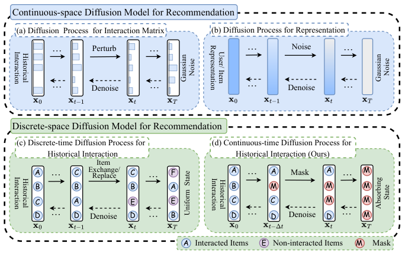
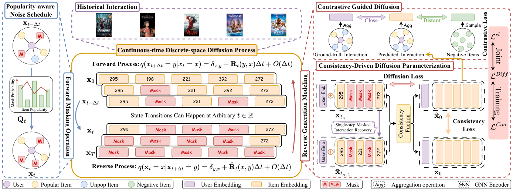

Continuous-time Discrete-space Diffusion Model for Recommendation (面向推荐的连续时间离散空间扩散模型)
- 会议/期刊: WSDM 2026
- 作者与机构: Chengyi Liu, Xiao Chen, Shijie Wang, Wenqi Fan, Qing Li（香港理工大学）
- 推荐链路定位: 召回（生成式用户表征 → 全库内积检索）
- 研究方向: 生成式推荐与离散语义 ID / 自监督对比学习
- 论文原文: https://arxiv.org/abs/2511.12114v1
- 开源代码: https://github.com/ChengyiLIU-cs/CDRec
TL;DR (1分钟核心速览)
现有扩散推荐（DiffRec/GiffCF/BSPM）把离散协同图编码进连续空间再加各向同性高斯噪声，既破坏个性化语义又需上百步采样。CDRec 改在离散状态空间上做扩散：用吸收态 [MASK] 直接扰动历史交互序列，连续时间 SDE 允许任意时刻状态转移；并设计流行度感知噪声调度（热门物品吸收概率更低，形成 easy-to-hard 轨迹）、一致性函数参数化反向过程（支持单步生成）、多跳协同对比损失引导采样。在 Ciao/MovieLens-1M/Dianping 三数据集 Full-Ranking 协议下，Recall@10 相对最强基线提升 4.21%–5.21%，且采样耗时显著低于 DiffRec。
Background & Motivation (背景与核心矛盾)
- 主流范式: 扩散推荐把用户历史交互当作待去噪信号，前向加噪、反向逐步恢复潜在偏好；代表作为 DiffRec（对二值交互向量加高斯噪声）、GiffCF（在 item-item 相似图上做热方程扩散）、BSPM（邻接矩阵上的连续时间 score-based 扩散）。
- 前人局限: ① 对交互矩阵加噪是全物品均匀扰动，无视物品依赖、破坏协同图拓扑；② 对编码表征加高斯噪声则破坏语义一致性，扩散轨迹信息量低、训练与采样低效（DiffRec 需 100 步）。
- 核心洞察 (Key Insight): 离散扩散（D3PM 式吸收态/均匀态转移）在文本生成中已证明可用离散元素操作（掩码/替换）替代高斯噪声，且转移矩阵可直接注入领域知识；但该范式在推荐中仅被 DCDR 用于重排阶段的物品位置扰动，从未用于直接建模用户偏好分布。
- 本文切入点: 把"用户交互序列"本身作为离散扩散的状态，用掩码吸收态 + 连续时间 SDE 建模，并用物品流行度定制噪声调度，使扩散轨迹"像真实交互过程"。

Method (核心方法设计)
1. 整体框架 (Overall Architecture)
输入为用户 \(u\) 的历史交互序列 \(\mathbf{x}_u=[v_1,\dots,v_l]\)（one-hot，\(l=20\)），用户/物品嵌入由预训练 3 层 LightGCN 初始化。前向过程按流行度感知调度逐步把物品替换为 [MASK] 吸收态，直至全掩码；反向过程由 Transformer 编码器实例化的一致性函数 \(F_\theta\) 直接从任意时刻 \(t\) 的掩码序列预测原始交互 \(\hat{\mathbf{x}}_0\)（序列前缀拼接协同用户嵌入 \(\mathbf{p}_u\)，时间步嵌入加到 \(\mathbf{p}_u\) 上，输出经与物品矩阵余弦相似度投影回离散空间）。训练联合一致性损失、扩散重建损失与多跳对比损失；推理时把生成物品嵌入聚合为用户表征，与全库物品内积取 top-\(k\)。
flowchart TD
A["历史交互序列 x_u (one-hot)"] --> B["流行度感知前向掩码<br/>β(t)_v 由 I(v) 调制"]
B --> C["一致性函数 F_θ (Transformer)<br/>输入: p_u ⊕ 掩码序列 ⊕ t"]
C --> D["预测 x̂_0 → 聚合为用户表征 e_u"]
D --> E["全库内积 Top-K 召回"]
C --> F["L_Con + L_Diff + λ2·L_cl 联合训练"]
2. 关键设计拆解 (Key Designs)
-
流行度感知噪声调度（Popularity-aware Noise Schedule）：线性/余弦调度假设所有物品对偏好建模贡献均等，导致掩码轨迹无语义。本文定义序列内流行度偏差 \(I(v)=\mathrm{pop}(v)-\frac{1}{l}\sum_{i}\mathrm{pop}(v_i)\)，并把吸收概率写成 $\(\beta(t)_{v_i}=\frac{t}{T}-\omega\exp\!\Big(-\frac{(t-T)^2}{2\sigma^2}\Big)I(v_i),\)$ 即热门物品（\(I>0\)）吸收更慢、冷门物品更早被掩。直觉：真实交互总是"先看热门再看长尾"，反向生成因此形成 easy-to-hard 课程，热门物品的稳定模式先被学到，长尾在后段被建模。该调度仍满足标准转移率要求（收敛性 + 转移核可解析计算 \(q_{t|0}=\big(S\exp(\Lambda\bar\beta(t))S^{-1}\big)_{ij}\)）。
-
一致性驱动的反向参数化（Consistency Function）：直接估 \(p_{0|t}\) 在离散分布下效果差，学 score 比 \(q_t(y)/q_t(x)\) 又需正性约束与高算力。本文改用一致性函数 \(f:(\mathbf{x}_t,t)\mapsto\mathbf{x}_\varepsilon\)，因离散态无法做 skip-connection 叠加，故分段定义为 \(f_\theta(\mathbf{x},t)=\mathbf{x}\ (t=\varepsilon)\)、\(=F_\theta(\mathbf{x},t)\ (t\in(\varepsilon,T])\)。训练目标 $\(\mathcal{L}_{Con}=\mathbb{E}_{\mathbf{x}_0,t_n}\big[\gamma(t_n)\,d\big(f_\theta(\mathbf{x}_{t_n},t_n),\,f_{\theta^-}(\bar{\mathbf{x}}_{t_{n-1}},t_{n-1})\big)\big],\)$ 其中 \(d\) 取 KL 散度、\(\theta^-\) 为 EMA。关键难点是构造相邻时刻对 \((\bar{\mathbf{x}}_{t_{n-1}},\mathbf{x}_{t_n})\)：作者给出 one-step recovery（只恢复掩码概率最低的一个物品）与 pseudo-Euler（按 \(\nabla t\) 自适应解掩，\(p=1-(B_{t_n-\nabla t}/B_{t_n})\)）两种方案，后者更贴合前向过程。
-
对比引导 + 联合训练：一致性损失会让热门物品被过度强调（它们在轨迹中存活更久），故加辅助扩散重建损失 \(\mathcal{L}_{Diff}=-\sum_i \mathbf{x}^i_u\log p^i_\theta(\mathbf{x}_0|\mathbf{x}_t)\) 稳定训练；同时把生成序列的物品嵌入聚合为 \(\mathbf{e}_u\)（模拟单层 GNN 传播），以预训练 \(\mathbf{p}_u\) 为正样本、随机未交互物品为负样本做 InfoNCE： $\(\mathcal{L}_{cl}=\sum_{u}-\log\frac{\varsigma(\mathbf{e}_u,\mathbf{p}_u)}{\varsigma(\mathbf{e}_u,\mathbf{p}_u)+\sum_{v\in\mathcal{V}^-_u}\varsigma(\mathbf{e}_u,\mathbf{q}_v)}.\)$ 总损失 \(\mathcal{L}=\lambda_1\mathcal{L}_{Con}+(1-\lambda_1)\mathcal{L}_{Diff}+\lambda_2\mathcal{L}_{cl}\)，\(\lambda_1=0.4\) 最优。负采样：对比损失用随机未交互物品（非 in-batch、非 hard negative）；推理支持单步（\(N=1\)）或多步（最优 \(N=30,T=60\)），单步即可媲美扩散基线。
Experimental Setup & Evaluation Protocol (实验设置与评估协议)
- 数据集与预处理: 评分 \(\ge 3\) 视为隐式交互，未做 5-core 过滤：
| 数据集 | #Users | #Items | #Interactions | 密度 | 场景说明 |
|---|---|---|---|---|---|
| Ciao | 7,373 | 91,091 | 227,392 | 0.0338% | 极稀疏点评/社交 |
| MovieLens-1M | 6,038 | 3,533 | 575,281 | 2.6967% | 稠密电影 |
| Dianping | 131,629 | 10,932 | 1,412,544 | 0.0981% | 大规模本地生活 |
- 数据划分与防穿越: 按 8:1:1 比例划分（train/valid/test），非 Leave-One-Out、非全局时间戳切分。
- 排名评测协议: Full-Ranking 全库未交互排序，指标 Recall@{5,10}、NDCG@{5,10}，5 次独立运行取均值。
- 对比基线与超参: 三类基线——GNN（NGCF/LightGCN/SGL）、VAE（Mult-VAE/VGCL）、扩散（DiffRec/L-DiffRec/BSPM/GiffCF）；batch=1024，\(l=20\)，Adam，\(\omega=0.5\)，\(\sigma=T/10\)，嵌入由 3 层 LightGCN 预训练初始化。
Key Experimental Results (实验关键数据)
1. 主实验对比 (Main Results)
| 数据集 | 指标 | NGCF | LightGCN | SGL | VGCL | DiffRec | BSPM | GiffCF | CDRec | Improv. |
|---|---|---|---|---|---|---|---|---|---|---|
| Ciao | R@10 | 0.0483 | 0.0525 | 0.0553 | 0.0568 | 0.0436 | 0.0590 | 0.0584 | 0.0617 | +4.58% |
| Ciao | N@10 | 0.0396 | 0.0441 | 0.0493 | 0.0477 | 0.0397 | 0.0518 | 0.0473 | 0.0539 | +4.06% |
| ML-1M | R@10 | 0.1201 | 0.1297 | 0.1319 | 0.1339 | 0.1351 | 0.1399 | 0.1426 | 0.1486 | +4.21% |
| ML-1M | N@10 | 0.1212 | 0.1231 | 0.1277 | 0.1315 | 0.1379 | 0.1347 | 0.1395 | 0.1469 | +5.30% |
| Dianping | R@10 | 0.0531 | 0.0543 | 0.0546 | 0.0551 | 0.0556 | 0.0557 | 0.0505 | 0.0586 | +5.21% |
| Dianping | N@10 | 0.0381 | 0.0421 | 0.0433 | 0.0431 | 0.0439 | 0.0441 | 0.0412 | 0.0471 | +6.80% |
（R@5/N@5 趋势一致，CDRec 在 Ciao R@5 上 +4.84%、ML-1M R@5 上 +6.88%、Dianping N@5 上 +6.19%。）
2. 消融实验 (Ablation Study)
| 变体 | Ciao R@10 | ML-1M R@10 | Dianping R@10 | 说明 |
|---|---|---|---|---|
| CDRec 完整 | 0.0617 | 0.1486 | 0.0586 | — |
| w/o pop | 显著下降 | 显著下降 | 显著下降 | 换回均匀掩码 + 线性调度 |
| w/o con | 降幅最大 | 降幅最大 | 降幅最大 | 退回估 $p_{0 |
| w/o diff | 降幅最大 | 降幅最大 | 降幅最大 | 仅保留一致性损失 |
| w/o ssl | 中等下降 | 中等下降 | 中等下降 | 去掉多跳对比引导 |
（原文图 4 仅给出柱状图，未列具体数值；上表按原文"降幅排序"定性归纳。）
3. 关键实验发现 (Key Findings)
- 离散化本身是主要增益来源：DiffRec 在 Ciao 上 R@10 仅 0.0436，甚至低于 LightGCN 的 0.0525，印证连续空间高斯噪声对稀疏协同图的破坏；CDRec 同数据集达 0.0617，说明"掩码吸收态 + 离散状态"避免了离散→连续编码的信息损失。
- 一致性损失与扩散损失是双支柱：消融中
w/o con与w/o diff降幅最大，说明单靠一致性（易过拟合热门）或单靠重建（无轨迹约束）都不足；\(\lambda_1=0.4\) 的折中最优点也印证二者互补。 - 效率与精度可兼得：单步生成（\(N=1\)）已可媲美扩散基线，\(N=30,T=60\) 为最优点，继续加步反而因噪声累积掉点；在 Dianping 上同 batch=1024 设置下 CDRec 采样耗时明显低于 DiffRec（掩码操作 vs 全物品向量加噪）。
Highlights, Limitations & Rating (亮点、对比与审稿评价)
- 与代表作对比 (vs. Prior Work): 与 DiffRec/GiffCF/BSPM 的本质区别是状态空间——它们把离散协同数据编码后加高斯噪声，CDRec 直接在物品 one-hot 序列上做掩码转移；与 DCDR 的区别是后者仅用离散扩散扰动重排位置，CDRec 用其直接建模偏好分布；与文本域 D3PM/SEDD 的区别是引入流行度先验调度与推荐定制的一致性训练对构造。
- 可迁移亮点: ① 用物品流行度偏差 \(I(v)\) 调制噪声调度，可平移到任何"带曝光先验"的生成式任务（如语义 ID 生成式检索的 token 掩码课程）；② 用 pseudo-Euler 解掩构造一致性训练对，绕开离散空间无 score 无偏估计的难题，可复用到其他离散扩散推荐。
- 审稿级局限批判: ① 对比损失仅用随机负样本，未探索 hard negative，长尾物品的判别边界可能仍偏弱；② 8:1:1 随机划分而非时间切分，存在未来交互泄漏风险，且未报告冷启动/长尾分桶实验；③ 一致性函数依赖预训练 LightGCN 嵌入，预训练质量与扩散模块的耦合未被消融隔离。
- 四维评分: 创新性 ⭐⭐⭐⭐ | 实验扎实度 ⭐⭐⭐⭐ | 方法清晰度 ⭐⭐⭐⭐ | 落地价值 ⭐⭐⭐⭐